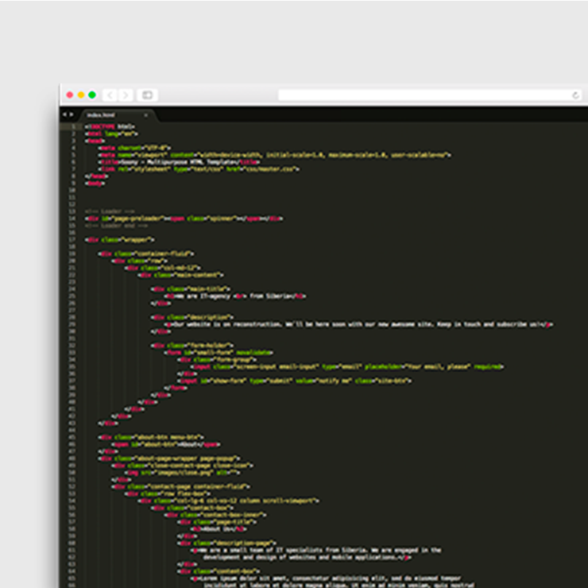
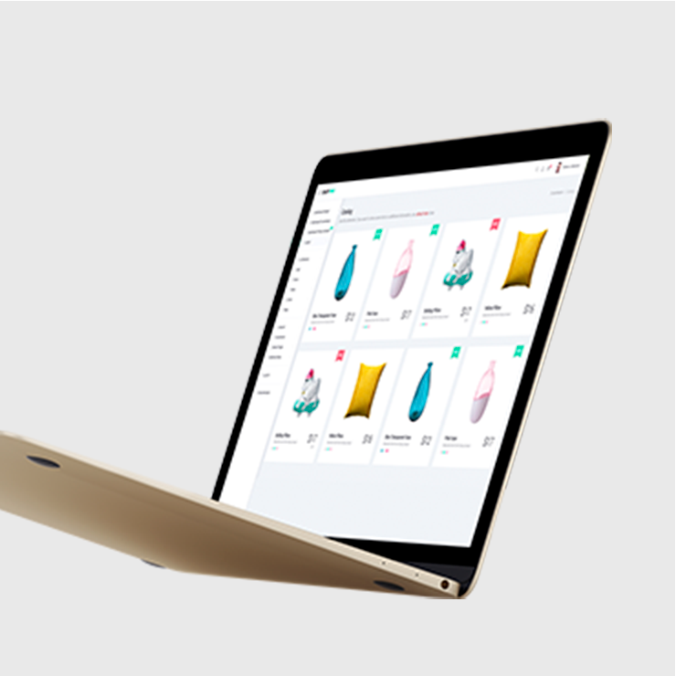

Full-stack web
Responsive front ends in React and Vue, backed by Node.js, PHP, Django and Flask APIs.
Open to new opportunities
Software Engineer & IT Specialist
I build full-stack web platforms, business systems and data-driven tools that solve real problems — from factory queue management and e-commerce to telemedicine and SAP Business One solutions.
About me
I'm an enthusiastic, results-oriented IT professional with a deep interest in emerging technologies and innovation. I hold a Bachelor's degree in Information Technology from Jomo Kenyatta University of Agriculture and Technology, built on an earlier diploma and certifications in areas such as data science, networking and cybersecurity.
My work spans full-stack web development, SAP Business One consulting, UI/UX research, SEO and analytics. I enjoy applying technical and analytical skills to real-world challenges, and I keep learning so I can contribute to impactful, tech-driven work.
Responsive front ends in React and Vue, backed by Node.js, PHP, Django and Flask APIs.
SAP Business One implementation, Crystal Reports, SQL and Microsoft Dynamics NAV support.
Analysis, visualisation and prediction with Python, Pandas, PySpark and machine learning.
SEO, landing pages and analytics tracking with GA4, GTM, Meta Pixel and Google Ads.
Career
Roles across software development, business systems, research and IT support.
Avané Dermatology Clinic
One World Leadership Institute Africa (OWLI Africa)
Gold Vein Solutions
Bright Innovations Limited
JKUAT · Internal attachment
Ministry of Petroleum and Mining
Toolkit
The tools I use to design, build, ship and support software.
Portfolio
Products I've designed and built, from live platforms to machine-learning systems.
Runs a factory's loading flow end to end: customer bookings, manager approvals, SAP numbers, QR gate tickets and a live loading queue through to delivery. Six role-based consoles share one login, backed by a REST API and an SAP integration API.
A premium online store for clothing, shoes, perfumes, jewellery and lifestyle goods, priced in Kenyan shillings. Shoppers search and filter by category, keep a wishlist and cart, and create an account to check out, while an admin dashboard manages the catalogue.
An online healthcare consultation platform connecting patients with doctors for remote appointments, scheduling, secure messaging and real-time video consultations.
A classroom management platform for Kenyan high school teachers that brings attendance, marks, timetables and student performance tracking into one simple workflow.
A platform connecting blood donors and recipients with location-based matching, live availability and urgent request notifications, paired with a machine-learning model that guides restocking.
A central place to plan tasks, track progress and manage delivery deadlines, with collaborative workflows for teams.
A machine-learning system that uses the Random Forest algorithm to predict high-demand blood types and optimise blood bank inventory through data-driven insights.
An AI-powered web application that detects plant diseases from leaf images and recommends remedies, using deep learning and image processing.
A scalable big-data pipeline that ingests COVID-19 hospital data into Hadoop, preprocesses it with PySpark and trains MLlib models to predict spread and hospital capacity needs.
An Android app that simplifies expense management with receipt scanning, bank sync and clear budgeting tools for smarter financial decisions.
Education
Jomo Kenyatta University of Agriculture and Technology
Sep 2022 – May 2025Jomo Kenyatta University of Agriculture and Technology
Sep 2020 – Apr 2022Certifications
Writing
May 8, 2024
Graphic design blends creativity and communication to turn ideas into visual impact.

January 22, 2024
Coding is where logic meets creativity to solve real problems and build digital products.

March 2, 2024
A good developer laptop balances speed, battery life and thermals so coding and testing stay smooth all day.
Contact
Have a project idea, a collaboration or a role in mind? I'd love to hear about it.
References are available on request.